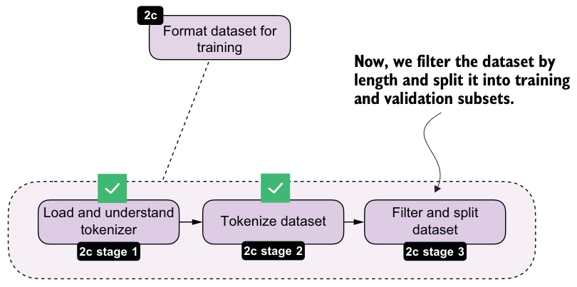
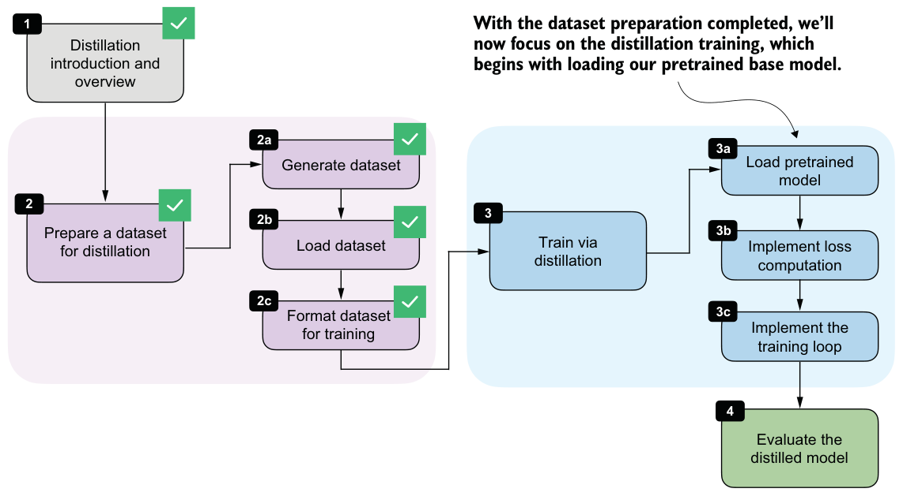

8.4.3Filtering and splitting the dataset
Once the examples are tokenized, we still need to filter long sequences and split the dataset into training and validation subsets. This step is highlighted in figure 8.10.

After tokenization, it’s useful to inspect the sequence lengths. This tells us how long the examples are on average, which samples are extreme outliers, and how aggressive our filtering needs to be. We can then remove examples above the chosen maximum length, shuffle the remaining data with a fixed random seed, and split off a small validation set.
Let’s begin by analyzing the sequence lengths.
def compute_length(examples, answer_only=False):
lengths = []
for ex in examples:
total = len(ex["token_ids"])
length = total - ex["prompt_len"] if answer_only else total
lengths.append(length)
avg_len = round(sum(lengths) / len(lengths))
shortest_len = min(lengths)
longest_len = max(lengths)
shortest_idx = lengths.index(shortest_len)
longest_idx = lengths.index(longest_len)
print(f"Average: {avg_len} tokens")
print(f"Shortest: {shortest_len} tokens (index {shortest_idx})")
print(f"Longest: {longest_len} tokens (index {longest_idx})")
compute_length(examples)This is the resulting output:
Average: 2946 tokens
Shortest: 236 tokens (index 10846)
Longest: 42005 tokens (index 2529)As you can see, the average response length is 2,946 tokens, which is typical for reasoning models. There are outliers, though. For instance, the longest answer is 42,005 tokens, which is excessive. The index positions (index 10846 and index 2529) denote the positions of the shortest and longest examples in the dataset, respectively, in case we want to inspect them.
To keep the computational costs reasonable for this distillation example, we’ll filter the dataset to include only entries of up to 2,048 tokens using the code in listing 8.6. In practice, controlling sequence length is one of the main steps that makes distillation feasible on smaller hardware.
def filter_examples_by_max_len(examples, max_len=2048):
filtered_examples = [
s for s in examples
if len(s["token_ids"]) <= max_len
]
print("Original:", len(examples))
print("Filtered:", len(filtered_examples))
print("Removed:", len(examples) - len(filtered_examples)) return filtered_examplesfiltered_examples = filter_examples_by_max_len(examples, max_len=2048)The filtering code in listing 8.6 removes 5,305 training examples:
Original: 12000
Filtered: 6695
Removed: 5305Let’s compute the dataset lengths on this new subset:
compute_length(filtered_examples)As you can see, the average token length is now down to 1,180 tokens, and none of the formatted training examples exceed 2,048 tokens:
Average: 1180 tokens
Shortest: 236 tokens (index 5971)
Longest: 2048 tokens (index 5587)Lastly, we’ll split the dataset into training and validation sets, where the latter are used for quick evaluations throughout the training run.
import random
rng = random.Random(123)
rng.shuffle(filtered_examples)
train_examples = filtered_examples[25:]
val_examples = filtered_examples[:25]
print("Number of train examples:", len(train_examples))
print("Number of validation examples:", len(val_examples))The resulting numbers of training and validation examples are as follows:
Number of train examples: 6670
Number of validation examples: 25We are keeping the validation set purposefully small so that we don’t unnecessarily slow down the training loop. In addition, after training is completed, we will use the 500 samples from the MATH-500 set to evaluate the model’s performance.
Exercise 8.1: Training and validation set lengths
Apply the compute_length function to the new train_examples and val_examples8.5Loading a pretrained model
With the dataset preparation complete, we can turn to the actual distillation training. We’ll begin by loading the pretrained Qwen3 base model, as shown in figure 8.11.

We’ll start with the pretrained Qwen3 base model, not from an RL-trained model, because distillation itself is the training stage we want to study here. This keeps our setup clean and makes it easier to attribute any improvement to the distilled reasoning traces. It also mirrors a common practical setup in which a general base model is adapted using teacher-generated data.
import torch
from reasoning_from_scratch.ch02 import get_devicefrom reasoning_from_scratch.ch03 import (
load_model_and_tokenizer,
)
device = get_device()
model, _ = load_model_and_tokenizer(
which_model="base",
device=device,
use_compile=False,
)We can ignore the loaded base tokenizer in listing 8.8 because we’ll be using the tokenizer with <think></think> token support that we loaded in section 8.4.1.